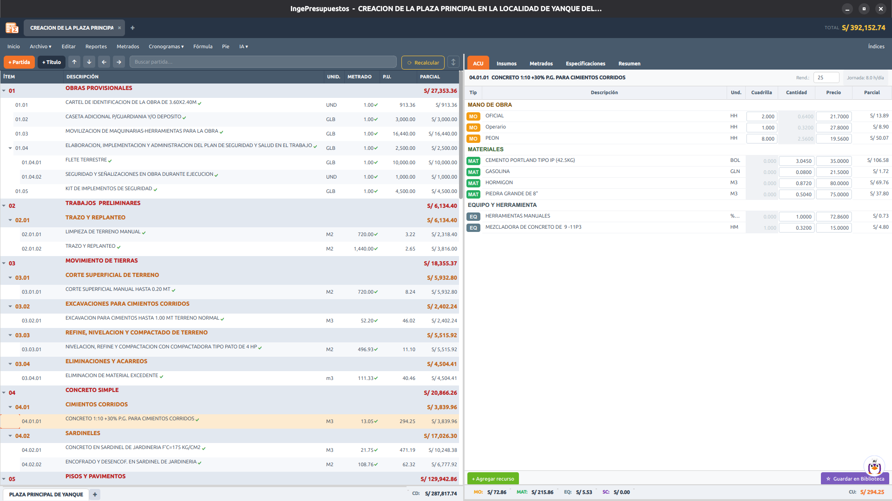
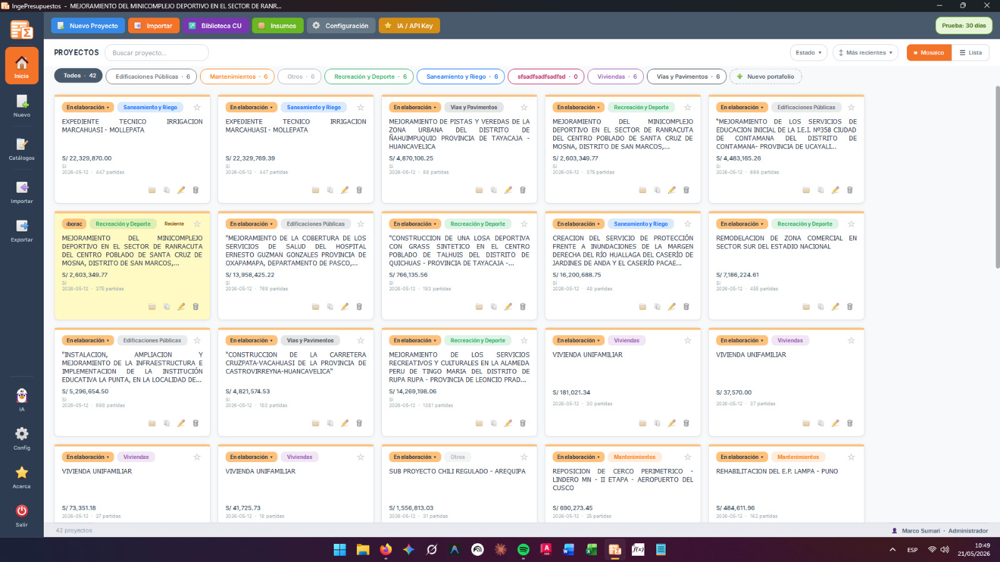
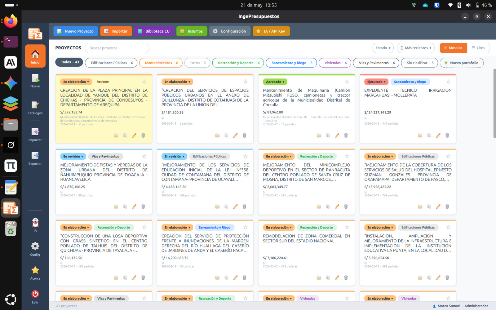
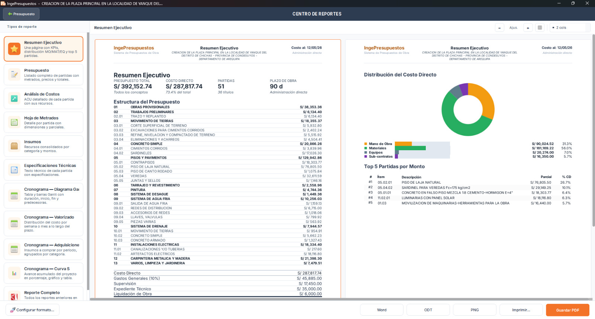
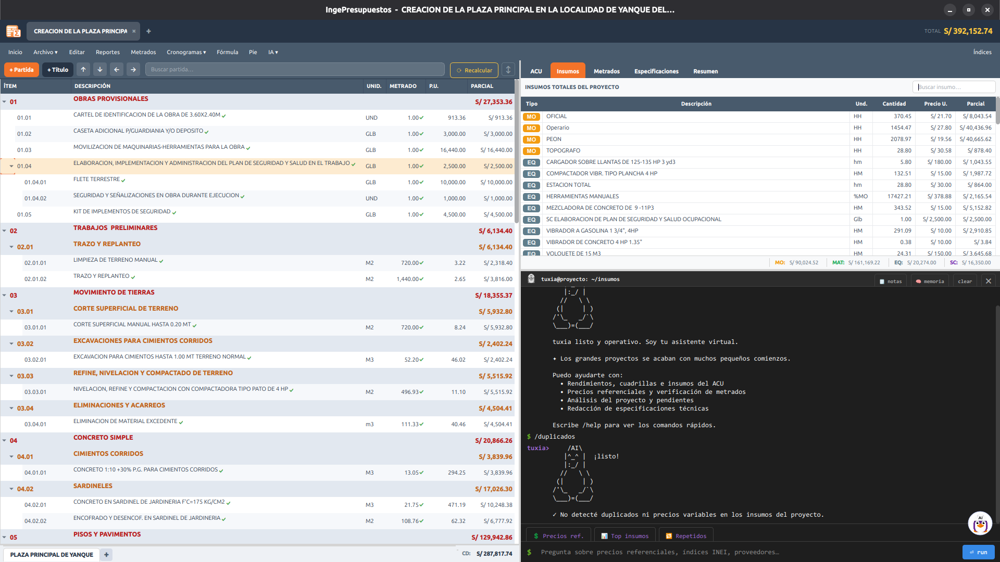
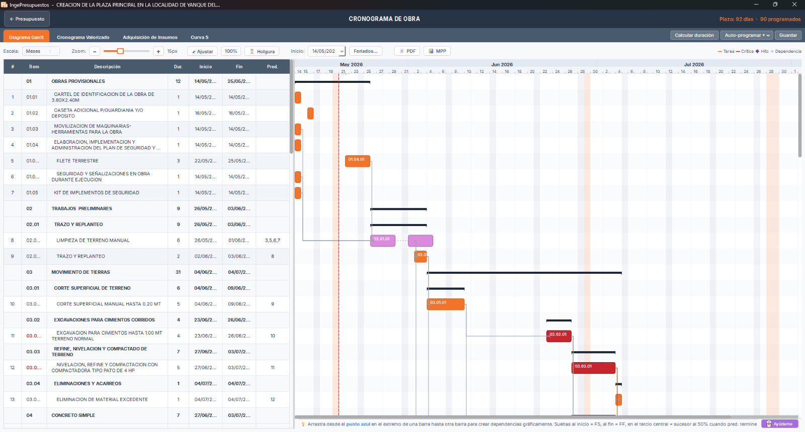
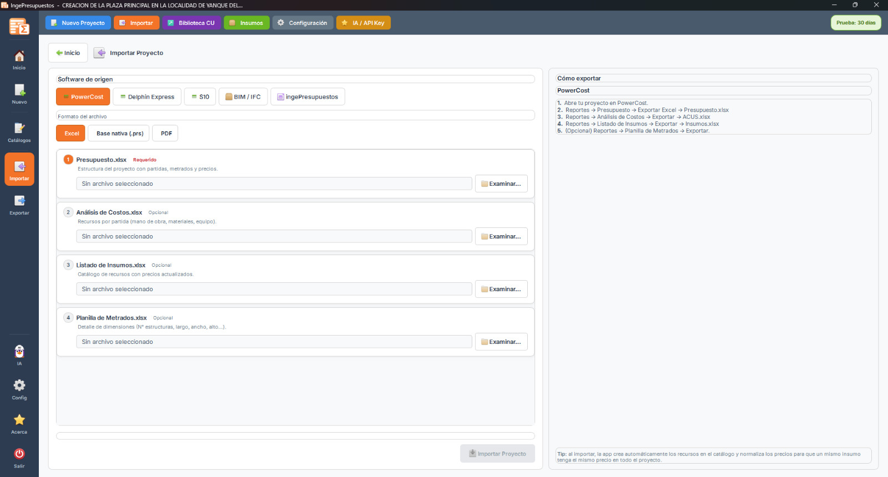
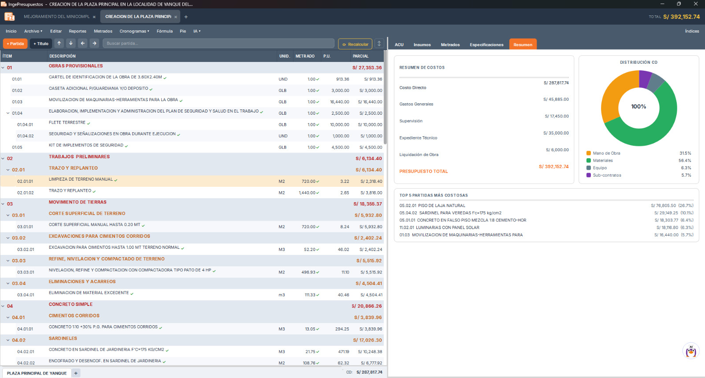

Multiplataforma. Offline. Formato abierto.
Importa desde Delphin, PowerCost y S10.

Una sola aplicación, idéntica en ambos sistemas. Los mismos proyectos, las mismas funciones, sin emuladores ni máquinas virtuales.
Instalador .exe para Windows, AppImage para Linux. macOS próximamente.


11 tipos de reporte con preview en vivo. PDF gratis para siempre — sin límites, sin marca de agua, sin caducidad.
Excel, Word, ODT, ODS y MS Project disponibles con licencia. Pie tripartito con tu marca, logo de empresa y numeración automática.

Tuxia, tu asistente, entiende el contexto de cada partida. Detecta incoherencias, sugiere precios, redacta especificaciones técnicas y encuentra insumos duplicados.
Compatible con Anthropic, OpenAI, Gemini, Groq, OpenRouter y Ollama local. Usa tu propia API key.

Programación CPM con ruta crítica, dependencias gráficas FS/SS/FF/SF, holguras, hitos y drag & drop visual.
Cronograma valorizado, adquisición de insumos por período, curva S. Exporta a MS Project XML.

Lee directamente los archivos originales de tu software actual — no necesitas exportar a Excel primero.

Tu base de datos es un archivo .db SQLite estándar. Puedes abrirlo con DB Browser, DBeaver, Python o cualquier herramienta. No es un formato propietario.
Si mañana prefieres otro software, te llevas todo. Exporta a Excel, Word, ODT, ODS y PDF sin restricciones.

Sin servidores, sin nube, sin suscripciones ocultas. SQLite local con backups automáticos diarios. Todo funciona sin internet.
Gratis por 30 días. Sin tarjeta, sin registro, sin email. PDFs gratis para siempre.
Versión portable: Windows ZIP · Linux tar.gz
PDFs gratis para siempre. Pagas solo si quieres reportes editables.
Precios en USD. Pagos por transferencia, Yape/Plin o tarjeta. Licencia 100% offline.
Sí, completamente offline. Tus datos viven en tu PC en un archivo SQLite estándar. Lo único que usa internet es el asistente IA Tuxia (y puedes usar Ollama local sin conexión).
Sí. El archivo .db es SQLite puro — ábrelo con DB Browser, DBeaver, Python o cualquier herramienta. No es formato propietario.
Sí. Con IngeConverter (incluido gratis) conviertes bases .S2K, .bkf y .bak de S10. También soportamos Excel exportado.
Descarga el .exe, doble click, sigue el asistente. Si sale "Windows protegió tu PC", click en Más información → Ejecutar de todas formas.
Descarga el .AppImage, dale permisos de ejecución y doble click. No requiere instalación.
El Gantt se exporta a XML MSPDI, formato nativo de Microsoft Project. Primavera P6 también lo abre.
Por WhatsApp y email con respuesta en menos de 24 horas. También puedes escribir desde el formulario de contacto integrado en la app.